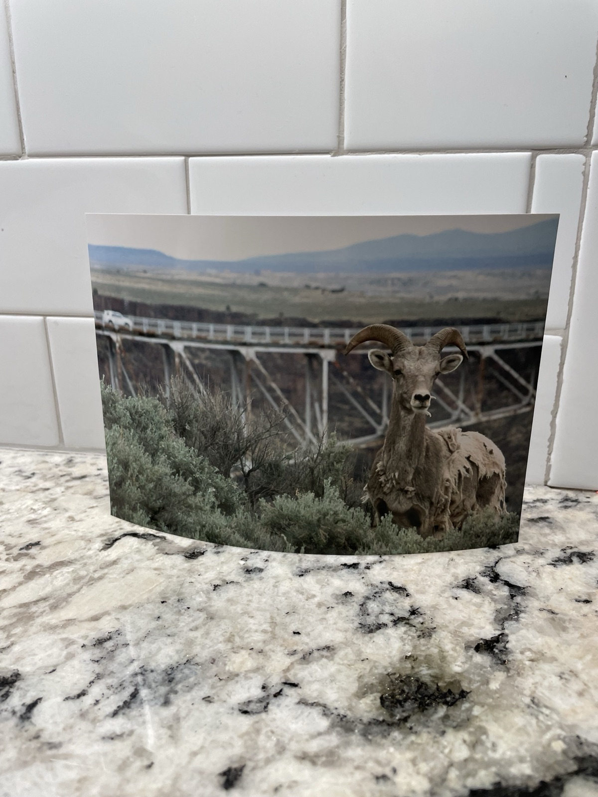
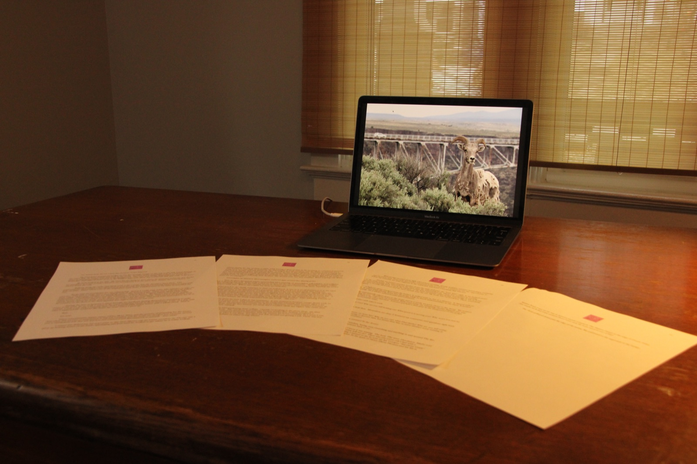
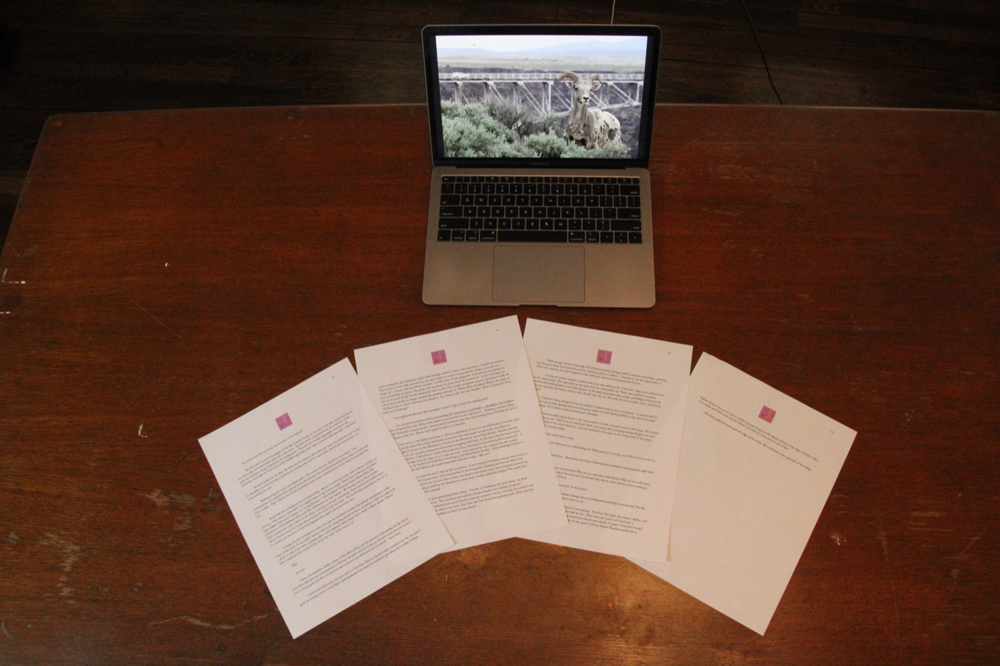
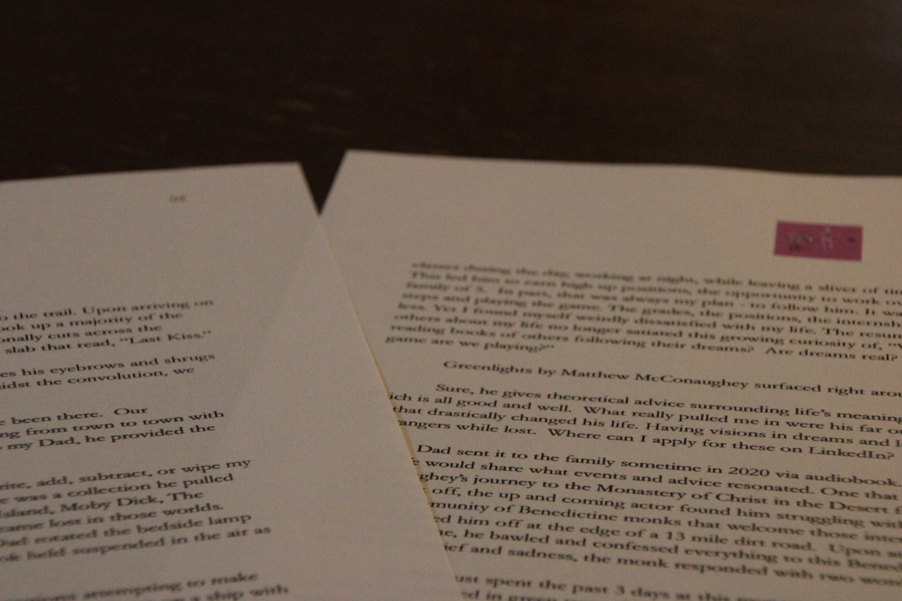
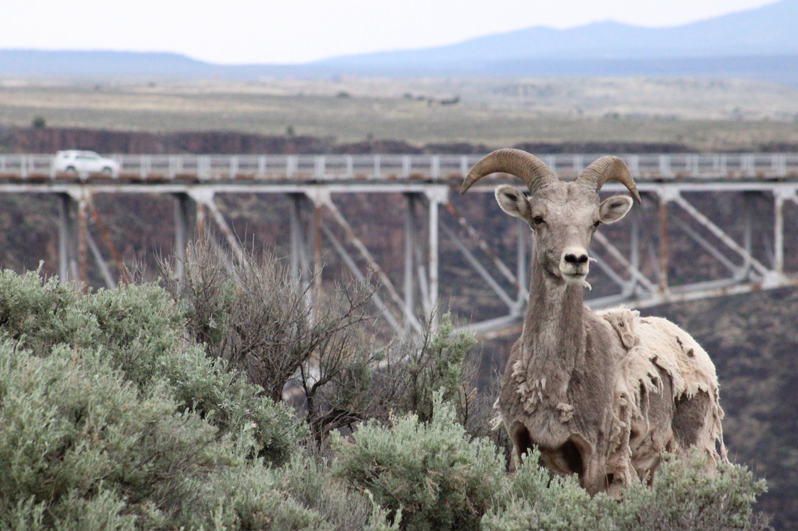

01 (Print & Story Set Example)
February 5, 2025





No matter how far out I was, the memory of her lingered.
Dad and I crossed the bridge of The Rio Grande Gorge on the way to the trail. Upon arriving on the other side, we looked back and took in the scene. Scrubby desert wasteland took up a majority of the space as mountain ranges towered in the background. The steel arch bridge diagonally cuts across the landscape. And right in front of us, at the bridge's approach, there was a concrete slab that read, "Last Kiss."
We both looked at the slab. He raised his eyebrows and shrugged his shoulders as if he's posing a question yet moving past it at the same time. Amidst the convolution, we started down the trail.
Walking along the rocky and sandy path, I felt a sense that she should've been there. Our conversations surrounded a free spirited post grad lifestyle. A life of bouncing from town to town with little plan. That's where a lot of the inspiration came from. Unknown to Dad, he provided the rest.
Books laid the foundation for our relationship. Before I could read, write, add, subtract, or wipe my own ass - Dad read to Gabe and I on a nightly basis in the bottom bunk. There was a collection he pulled from called, "Adventure Classics for Young Readers." This included Treasure Island, Moby Dick, The Adventures of Huckleberry Finn, and The Adventures of Tom Sawyer. We became lost in those worlds. His accents and voices added to the allure. Coming to was gut wrenching - Dad rotated the bedside lamp switch, slowly closed the book, and pounded the cover with his hand. The book held suspended in the air as he tossed it on the floor. The thud signaled that night's adventure was over.
During the time in between I sifted through the hardback finding illustrations attempting to make sense of the story. To no avail, I stared at the cover imagining myself in those situations. I was on a ship with a pirate. I rode a raft with a runaway slave. And I painted white picket fences with a fellow rascal. That is what I supposed life would be like down the road "when I grew up."
Wait….
It's not?
Taxes, consumerism, habits, status, GPAs, IRAs, IPAs, and the process of preparing for the future. And when that process of preparation is full and complete and the boxes are checked and everyone around you is saying great job! But you feel lost and confused and disconnected from yourself - then what?
I surfed this dichotomy for years prior to this New Mexico trip we found ourselves on. On one side I grew up hearing stories of my Dad's upbringing and how hard he worked to get where he is today. College classes during the day, working at night, while leaving a sliver of time in the morning to complete homework. This led him to earn high up positions, the opportunity to work overseas, and the ability to provide for a family of 5. In part, that was always my plan - to follow him. It was pragmatic. I became good at taking the steps and playing the game. The grades, the positions, the internships all checked out. It was a privilege, no less. Yet I found myself weirdly dissatisfied with my life. The resume, instagram content, and what I could tell others about my life no longer satiated this growing curiosity of, "What else is out there? What is the point of reading books of others following their dreams? Are dreams real? Are they feasible? What is going on? What game are we playing?"
Greenlights by Matthew McConaughey surfaced right around this tipping point.
Sure, he gives theoretical advice surrounding life's meaning on greenlights, yellowlights, and redlights which is all good and well. What really pulled me in were his far out experiences. Working a unique college job that drastically changed his life. Having visions in dreams and later experiencing them. Heeding the advice of strangers while lost. Where can I apply for these on LinkedIn?
Dad sent it to the family sometime in 2020 via audiobook. It was as if we all listened to it at the same time. We would share what events and advice resonated. One that stuck out and stuck onto Dad was McConaughey's journey to the Monastery of Christ in the Desert far out in New Mexico. Shortly after his career took off, the up and coming actor found him struggling with fame. At the same time he had heard of this remote community of Benedictine monks that welcome those interested in experiencing the monastic life. A friend dropped him off at the edge of a 13 mile dirt road. Upon arrival, he was embraced by the monks. During his time, he bawled and confessed everything to this Benedictine brother. After releasing 4 hours of snot infused grief and sadness, the monk responded with two words - "Me too."
We had just spent the past 3 days at this monastery. It was situated in between orange desert rock, to my surprise, covered in green trees. Dad found solace in the Gregorian Chanting and incense filled 4 am chapels. While I opted for the services after sunrise, my deepest enjoyment came from frequent journeys up the mountains. That was my church. I would go until the face became too steep and I couldn't climb any higher. The entire river valley sat beneath my feet, tranquil.
This was 2 weeks after graduating from college. Outside of working at the pizza shop, my final semester was spent in solitude. The questions and curiosity became louder. They fucking screamed. I meditated in my room and wandered around Columbus with my camera for hours on end. In a sense I was waiting. Waiting to go and see what is out there. Yes, there was fear around not getting a job. There was fear of falling behind. But falling behind on what? Going where?
With savings accrued from high school lawn mowing, driving forklifts, summer internships, caddying, and the pizza shop fused with this perfect transition point to explore - I wanted to use the opportunity to follow my curiosity, see what happens in the unknown, and learn as much as I can about what I am not.
Anyway we found ourselves further down the trail, well past the "Last Kiss" sign, as we inched closer to the steep ravine. The trail ended at the same time the wind picked up. There was comfort in turning around and heading back. Lost in the expanse of the land, mountain range, gorge, and bridge it felt as if my feet were moving themselves and we were already near the car. My body was on autopilot. Then, something jumped.
A bighorn sheep emerged from the bushes. It walked with us, but at a distance. It danced with its gallops. It teased while glaring down into the gorge while its hoofs kicked pebbles in the abyss. It looked ready to jump. Yet, it always turned around and continued.
The trail naturally edged closer to the ravine and as a result, we grew closer to the sheep. We noticed it was shedding its coat. Half of its fur remained. With every jump the remaining chunks flapped one way, while the wind blew it the other direction. It posed and held a firm gaze in the foreground of the gorge, bridge, land, and mountain range.
We stared into each other's souls.
The winter is over! Why are you still holding on? What good is it serving you? Why won't you just let go of it? Move on.
The sheep's gaze held firm. Motionless, yet clear, it bounced my comments and questions right back to me.
Sam why won't you move on from her? Why do you care what Dad thinks? Why are you still trying to become him? I wasn't just trying to become him, but better than him in some abstract sense existing in this hollow structure dazed and confused.
But sheep! It is about to be summer! In the desert!
Once more, in this stature of wisdom, having seen everything and anything in and around The Rio Grande Gorge - it reverberated my comments back to me.
I didn't know what to expect, but I knew it was waiting. The heat. The sand. Desolation. Maybe cold nights? Who exactly am I staying with and what will we do? I had 1 zoom call with a Hungarian man. To double check it's something I wanted to do, he sent me his 13 paper "Survivors Guide" overviewing the operation he had built the past 7 years. In the spirit of Henry David Thoreau and his life at Walden Pond, I was on my way to spend a month off grid in The Mojave Desert at the edge of Death Valley. Hey, maybe we'll find some answers there? Let's suck the bone marrow out of life?
The sheep galloped down past the edge of the ravine. We continued to the approach of the bridge.